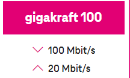
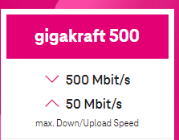

Warum ist der Upload bei Magenta in Österreich auf 50 Mbit/s begrenzt?
Litty
Hallo, ich hab eine Frage!
Warum ist eigentlich der Upload auf 50mbit/s Limitiert in Österreich, spart das Unternehmen dadurch an Ressourcen, oder wie kann man das Verstehen?
In anderen gewissen Ländern hat man einen identischen Download und Upload. Als Beispiel 500mbit/s Up und 500mbit/s Down.
Danke vorab für die Antwort.:)
Bearbeitet
von Litty
Roman Schreiber
Am 3.9.2023 um 21:54 schrieb Litty:
Warum ist eigentlich der Upload auf 50mbit/s Limitiert in Österreich
Hallo
🙂
,
Die Begrenzung der Upload-Geschwindigkeit auf 50 Mbit/s bei einem Internetanbieter wie Magenta in Österreich könnte verschiedene Gründe haben, die nicht unbedingt mit Ressourceneinsparungen zu tun haben. Hier sind einige mögliche Erklärungen:
- Netzwerkkapazität: Internetanbieter müssen sicherstellen, dass ihre Netzwerke die Nachfrage der Benutzer bewältigen können. Oftmals wird die Downstream-Geschwindigkeit (Download) höher priorisiert, da die meisten Benutzer mehr Daten aus dem Internet herunterladen als sie hochladen. Daher kann die Ressourcenallokation so gestaltet sein, dass mehr Bandbreite für den Download zur Verfügung steht.
- Technische Beschränkungen: Die Art der verwendeten Technologie kann die Upload-Geschwindigkeit begrenzen. Einige DSL- oder Kabel-Verbindungen haben aufgrund ihrer Infrastruktur natürliche Einschränkungen bei der Upload-Geschwindigkeit.
- Marktnachfrage: Die Entscheidung eines Internetanbieters, die Upload-Geschwindigkeit zu begrenzen, kann auch auf Marktfaktoren und Kundenwünschen basieren. Wenn die meisten Kunden eine höhere Nachfrage nach schnellen Downloads als nach schnellen Uploads haben, passen die Anbieter ihre Tarife entsprechend an.
- Kosten: Der Ausbau von Netzwerkinfrastruktur, um höhere Upload-Geschwindigkeiten anzubieten, kann teuer sein. Dies könnte eine Rolle bei der Entscheidung spielen, die Upload-Geschwindigkeit zu begrenzen, um die Kosten niedrig zu halten.
In einigen Ländern haben Internetanbieter Tarife mit symmetrischen Geschwindigkeiten (gleicher Upload und Download) im Angebot, während in anderen asymmetrische Tarife (unterschiedliche Upload- und Download-Geschwindigkeiten) üblicher sind. Dies hängt von den individuellen Marktbedingungen, technischen Faktoren und Kundenanforderungen ab.
Wenn du eine höhere Upload-Geschwindigkeit benötigst, solltest du dich direkt an Magenta wenden (0676 2000) und nach den verfügbaren Tarifen fragen. Es ist möglich, dass sie Tarife mit höheren Upload-Geschwindigkeiten anbieten, auch wenn sie möglicherweise teurer sind.
LG RS.
hawkeye
50 MB UL reichen vollkommen, für jede erdenkliche Anwendung, beim Mondflug sind sie seinerzeit mit einer Rechnerleistung im KB-Bereich ausgekommen
😛
Roman Schreiber
Am 5.9.2023 um 14:51 schrieb hawkeye:
50 MB UL reichen vollkommen
Wenn du wirklich ein Streamer bist und nebenbei noch lange Videos hochlädst, könnte es manchmal schon schneller gehen - mit mehr Upload. Aber stabile 50 Mbit/s sind auch super
🙂
. LG RS.
mc-edv
Also 20:1 (DL/UL) bei 1 Gbit ist schon schwach, unerklärbar, dass man nicht zumindest 10:1 zur Verfügung stellt - das wäre ausgewogen. Auch ich habe VPN-bedingt mit den UL-Datendurchsatzraten zu kämpfen.
Bearbeitet
von mc-edv
Jonathan Dorian
Am 27.9.2023 um 15:58 schrieb mc-edv:
Also 20:1 (DL/UL) bei 1 Gbit ist schon schwach, unerklärbar, dass man nicht zumindest 10:1 zur Verfügung stellt
Also ich verstehe dein Argument nicht ganz.

= 1:5
= 1:5

=1:10
Ein 1000er Tarif ist halt eine andere Nummer
😄
LG JD.
Maverick
Servus
@Jonathan Dorian
, da muss ich auch mal einwerfen, den ich hatte vor meinem jetzigen Gigakraft 500 den Gigakraft 1000 Tarif, und da waren oder sind es in der Tat "nur" 50mb Upload bei 1000mb Download.
Am 28.9.2023 um 14:20 schrieb Jonathan Dorian:
Ein 1000er Tarif ist halt eine andere Nummer
😄
Ist halt wie beim Kreisler damals,
darfs ein bisschen mehr sein?.
Jonathan Dorian
Am 29.9.2023 um 07:24 schrieb Maverick:
n der Tat "nur" 50mb Upload
Ich denke, es wird zwangsläufig bald mehr Upload bei den Tarifen inkludiert sein. Die Menge an Daten die hin und her geschickt wird, steigt kontinuierlich an. Somit kann das nur die logische Folgerung sein. Die Frage ist nur wann.....aktuell liegen mir keine Infos vor.
LG JD.
mc-edv
Na ich bin gespannt, A1 ist schon seit einiger Zeit auf 250 Mbit UP, schön langsam ziehen sie Magenta davon! Auch ich benötige mehr UPLOAD für die VPN-Verbindung im Büro zu mir heim.
Maverick
Am 5.11.2023 um 18:51 schrieb mc-edv:
Na ich bin gespannt, A1 ist schon seit einiger Zeit auf 250 Mbit UP, schön langsam ziehen sie Magenta davon! Auch ich benötige mehr UPLOAD für die VPN-Verbindung im Büro zu mir heim.
Aber vermutlich "nur" im Business oder Glasfaser Tarif Bereich, sonst sind es für den Privaten auch "nur" bei DSL (Kupferleitung) bis zu 30mb Upload bei bis zu 250mb Download.
Mehr gibt die DSL Kupfer Leitung noch nicht her.
Bearbeitet
von Maverick
NTM
Es gibt ab heute einen neuen Gigakraft 1000 Tarif mit 80 Mbit/s Upload.
Maverick
Es sind überhaupt neue Tarif Gestaltungen bei Magenta Kabel Anschluss.
EDIT: Bin gerade von Gigakraft 500/50 zum neuen Internet-TV L 600/60 gewechselt, hat gut geklappt.
Bearbeitet
von Maverick
Jonathan Dorian
Die Tarife können sich schon sehen lassen. Was mir am besten gefällt ist das weiß auf grün Geschriebene.
KEINE SERVICEPAUSCHALE!
Endlich keine Überraschungen mehr auf der Rechnung
😊
!
LG JD.
Maverick
Am 5.11.2023 um 18:51 schrieb mc-edv:
Na ich bin gespannt, A1 ist schon seit einiger Zeit auf 250 Mbit UP, schön langsam ziehen sie Magenta davon! Auch ich benötige mehr UPLOAD für die VPN-Verbindung im Büro zu mir heim.
Das Glaube ich nicht!.
Mag sein, dass dies über rein Glasfaser Anschluss schon möglich ist, aber wer hat oder nutzt schon Internet auf Glasfaser Anschluss im Privat Bereich?
Hier mal zwei Screenshots vom Mitstreiter A1 Privat (oben) und A1 Business (unten) auf DSL Basis.
Ich kenne einige die reines FTTH von A1 haben. Bei neubauten ist es sogut wie Standard, aber so haben einige schon FTTH. Bei Freunden, Einfamilienhaus am Land, wurde FTTH seitens A1 nachgerüstet.
Hin und wieder habe ich mal den Breitbandaltas ausgewertet, da waren auch einige mit A1 FTTH versorgt. Auch Magenta bietet FTTH auch an, leider noch weniger verbreitet als A1.
Die fonira Bandbreiten sind eine gute übersicht von dem im A1 Netz möglich ist. Alles mit Plus im Namen ist nur über FTTH möglich:
Das habe ich auch geschrieben, dass diese Upload Werte möglicherweise "nur" mit einem Glasfaser - ak- FTTH - Anschluss erreicht werden können.
Da sollen ja auch schon Downloads jenseits von "gut und böse" möglich sein.
Per reinem DSL Anschluss "Kupfer" alleine wohl weiterhin nicht.
Bearbeitet
von Maverick
IT-Freak
Ja. Du hattest aber auch angedeutet, dass die eher sehr selten sind. Das sehe ich ganz anders.
Breitbandatlas Quadrate mit A1 FTTH: 51_195, A1 DSL: 644_303
Quadrate mit Magenta: 40_564, Docsis 39_888, FTTB 579, FTTH 96
FTTH insgesammt, inkl Mehrfachzählung bei Mehrfachausbau: 189_621
Dabei ist jetzt nicht ausgewertet, wie viele Menschen/Haushalte/realisierte Anschlüsse in den jeweiligen Quadraten liegen.
Anzahl an FTTH Quadrate gesplittet nach Anbietern, gefiltert auf die Anbieter welche die meisten Quadrate versorgen. Unter Other sind jene gelistet, die nicht die Top 5 sind.
Ja. Du hattest aber auch angedeutet, dass die eher sehr selten sind. Das sehe ich ganz anders.
Breitbandatlas Quadrate mit A1 FTTH: 51_195, A1 DSL: 644_303
Quadrate mit Magenta: 40_564, Docsis 39_888, FTTB 579, FTTH 96
FTTH insgesammt, inkl Mehrfachzählung bei Mehrfachausbau: 189_621
Dabei ist jetzt nicht ausgewertet, wie viele Menschen/Haushalte/realisierte Anschlüsse in den jeweiligen Quadraten liegen.
Anzahl an FTTH Quadrate gesplittet nach Anbietern, gefiltert auf die Anbieter welche die meisten Quadrate versorgen. Unter Other sind jene gelistet, die nicht die Top 5 sind.
Kann schon sein das ich angedeutet habe, dass diese eher selten sind.
Tatsache ist da wohl, dass es in Ballungsgebieten (Mehrparteienhäuser) weiterhin keine Möglichkeit gibt auf den Glasfaserzug aufzuspringen, um da auch in den Genuss des schnelleren Internetzugangs (Down/up) zu gelangen.
Im gewissen Ländlichen Bereichen (Ein/Zweifamilien Häuser) dürfte der Glasfaser Ausbau eher von statten gehen und auch genutzt werden.
Dennoch ist die Glasfaser Nutzung im Privatbereich wohl noch sehr gering (Vermutung).
Wie wird es in Zukunft weitergehen mit dem Ausbau im Privatbereich, auch für Mehrparteienwohnhäuser?
IT-Freak
Ein Mehrparteienhaus ist das beste für die Anbieter. Einmal Gartenaufgraben für 30 Wohnungen, also am Land. In der Stadt, 15 Wohnungen je Stockwerk. Die Gebäudeverwaltung muss natürlich auch mitspielen.
Viele ISPs bieten die Kupfer Tarife auch auf der Glasfaser Infrastruktur an, somit hat der Kunde keine Mehrkosten durch das FTTH. Der ISP realisiert dann sogut wie immer FTTH, weil es damit weniger Probleme und somit weniger kosten gibt.
Im Breitbandatlas kannst du nach Technologie Filter, z.b. FTTH
Natürlich kenne ich auch Leute in Wien die kein FTTH haben.
Maverick
Am 10.11.2023 um 13:33 schrieb IT-Freak:
Natürlich kenne ich auch Leute in Wien die kein FTTH haben.
Einer davon bin wohl auch ich, den ich bin auch in Wien in einem mehr Parteien Wohnhaus zuhause und nutze das Glasfaser/Koaxial Gemisch von - seinerzeit UPC - jetzt Magenta.
Ist aber dennoch kein reiner Glasfaser Anschluss, und es ist auch noch kein Ausbau in Sicht.
Wien ist wohl doch anders.
Wie sich dies in einer Stadt verhält wo auch die Verwaltung zustimmen müsste und wohl auch die Herstellerkosten tragen wird müssen, hmmm...., wie viele werden da zustimmen?
Im Ländlichen Bereich lässt sich dieses wohl gleich bei einem Neubau - egal ob ein- oder kleine mehr Parteien Häuser - mit einplanen, den da wird es leichter sein zu einem reinen Glasfaser Anschluss zu kommen.
Man wird sehen wie es weitergeht mit den Ausbauten von reinem Glasfaser !?
IT-Freak
Es gab eine Zeit lang, wo sich ISPs exklusivrechte bei Neubauten eingeräumt hatten. Der Business Case ist auch ein anders, wenn schon schnelles Internet vorhanden ist. Es ist ganz schwierig die Kunden zum Wechseln zu bewegen. Damit sich der Ausbau rechnen würde, müssten X Kunden in einem Objekt wechseln damit es sich aus geht.
Man sieht es relativ gut bei ÖGIG ausbau, den ISP, den die Kunden direkt beim Ausbau wählen, bleiben sie treu. Unterm Strich, der beim initialen Ausbau das beste Marketing und Angebot hatte, macht das Geschäft.
Wegen den Kosten, zum Teil übernehmen die ISPs da einiges.
Hausverwaltungen gibt es am Land auch, das ist das selbe Vergnügen wie in der Stadt, auch bei Eigentumswohnungen ....
Maverick
Am 10.11.2023 um 15:41 schrieb IT-Freak:
Es gab eine Zeit lang, wo sich ISPs exklusivrechte bei Neubauten eingeräumt hatten. Der Business Case ist auch ein anders, wenn schon schnelles Internet vorhanden ist.
Es ist ganz schwierig die Kunden zum Wechseln zu bewegen
. Damit sich der Ausbau rechnen würde, müssten X Kunden in einem Objekt wechseln damit es sich aus geht.
Am 10.11.2023 um 15:41 schrieb IT-Freak:
Hausverwaltungen gibt es am Land auch, das ist das selbe Vergnügen wie in der Stadt, auch bei Eigentumswohnungen ....
Genau, den da liegt der "Hase" im Pfeffer, den wenn nur die Hälfte der Bewohner in einem Mehrparteienmietshaus für den Wechsel ist, wird daraus nichts weil es sich für die Verwaltung dann nicht rechnen dürfte, den da müssen wohl mindestens dreiviertel der Bewohner dafür sein.
Bei einem Mehrparteienhaus nur mit Eigentumswohnungen sieht es wohl noch krasser aus, den da müssten alle Bewohner zustimmen um das Vorhaben zu realisieren.
Aber ja, man wird sehen müssen, wohin der Weg führen wird, den an die Zukunftstechnik kommt keiner vorbei.
{kind=link}
{kind=link}
{kind=link}
{kind=link}